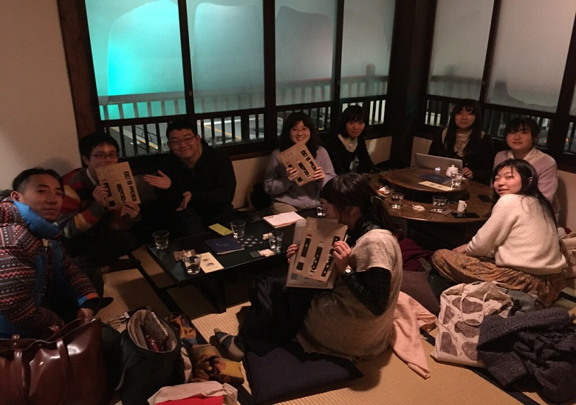
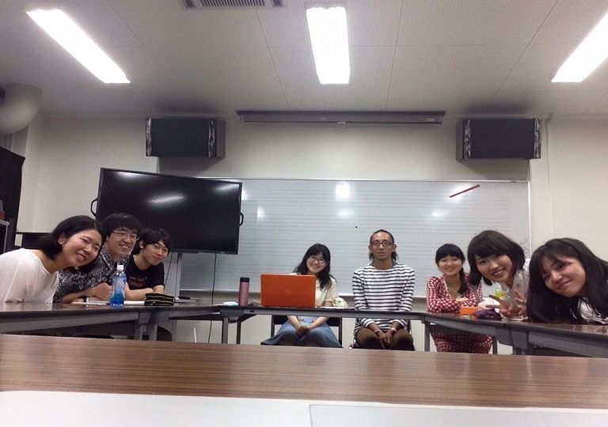
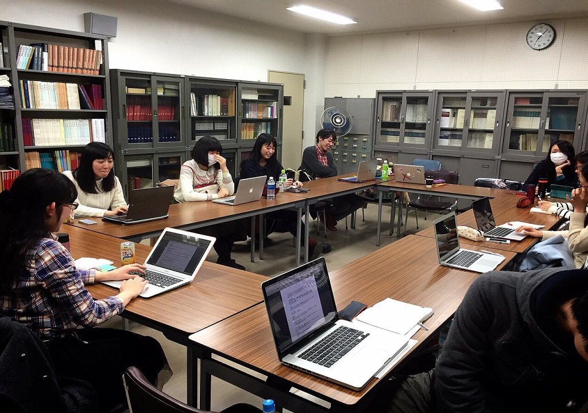

    <!--background color-->
    <script type="text/javascript">
        document.write ('<body style="background: Gainsboro; background-attachment: fixed;">')
    </script>

    <section id="conference" class="black-frame about about-container about-container-top">
      <h1>{{ page.title }}</h1>
      

      <h2 class="first">ICFとは</h2>

      <p>Intercollegiate Celtic Festivalの略称。</p>
      <p>アイルランドの伝統音楽とセットダンスにどっぷり浸かる3日間！2010年に始まった、学生を中心に全国のアイリッシュ好きが集まり、地域・世代を越えてみんなで交流を深めるイベントです。初めての方も経験者の方も、参加大歓迎！</p>

      <h2 class="forth">ICFスローガン 「楽しむ、つながる、アイリッシュ」</h2>

      <p>「楽しむ」 上手いもいいけどまずは楽しく</p>
      <p>「つながる」 たくさん見つける新たな仲間</p>
      <p>「アイリッシュ」 覗いてみようアイルランドの伝統</p>

      <h2 class="first">ICF実行委員</h2>

      <p>ICFは各地の大学生により結成されたICF実行委員会が、非営利で運営しています。フレッシュなパワーで、楽しいイベントを作り上げようと日々頑張っています！</p>
      
      <h2 class="first">代表挨拶</h2>

      <p>こんにちは！第10回ICFの代表に就任しました福島開です。</p>
      <p>私は普段UT-Fuaimというサークルでフィドルをメインに活動しています。今年でアイルランド音楽を始めて3年目になるのですが、私がこの音楽にハマったのは２年前の第8回ICFがきっかけでした。素晴らしい講師の方々に伝統的な演奏を実践してもらい、それ以来、奥深いアイルランド音楽の魅力に取り憑かれました。</p>
      <p>今回のICFでも新入生にとってはアイルランド音楽やそのダンスの奥深さを知るきっかけとたくさんの人との交流の機会を提供するつもりです。また、上級生や大人の方には新しくなったICFを体験していただきたいと思っております。具体的には、例年通り講師の方にクラスの開講をお願いするとともに、学生が主体となって様々なテーマを考える研究会もより大きく取り上げ、ダンス狂の方々のために、ケーリーも増量する予定です(笑)。他にも、交流会やセッションなど様々な企画を考えていますので、どうぞ皆様楽しみにしておいてください！</p>
      <p>今回は、ICFの内容だけでなくシステムや資金面などでも、(ほとんど僕のわがままで)新たなことに挑戦することになりますが、頼もしい委員会の仲間達に頼りながら一つずつ実践して行きたいと思います。また、より良いICFを創り上げるために、皆様のお力添えが不可欠ですので、どうぞ応援のほど宜しくお願い致します。</p>
      <p>第10回ICF代表　福島開</p>

    </section>

    <section id="committee" class="black-frame about about-container">
      <h1>実行委員に参加してみたい方へ</h1>

      <p>実行委員会は次の回のICFに向けて前年の5月を目安に発足します。委員募集は発足に向けて3月から5月まで行っておりますが、お問い合わせはいつでも大歓迎です！ 当日の仕事や自宅でできる仕事などもあるので、様々な地方の学生の皆様の参加をお待ちしております！</p>
      <p>一緒にICFを動かしてみませんか？</p>

      <h2>実行委員会のお仕事</h2>
      <p>今年は上野をメインに活動しておりますが、その年の実行委員の都合に合わせて設定します。</p>
      <h3>代表・副代表</h3>
      <p>代表・副代表は外部の方との連絡窓口兼実行委員のまとめ役です！講師の方との連絡や、問い合わせ対応、会議のセッティングや進行、各係の進行状況の確認、指示出し等大変ですがやりがいのある仕事です♪</p>

      <h3>会計</h3>
      <p>会計は主に、申し込みの管理と、口座の管理を2人で分担して行っています。どんな方が申し込んでくださるか、毎日ワクワクしながら仕事をしています！</p>
      
      <h3>メーリス係</h3>
      <p>ICF参加者のメーリスを作成し、管理します！</p>

      <h3>Web係</h3>
      <p>ICFのホームページをデザイン、管理、更新する係です。イベント情報の紹介や告知を皆様にいち早く届けます。</p>

      <h3>Twitter係・Facebook係</h3>
      <p>それぞれのSNSアカウントで、ICF関連の情報を随時発信する係です！</p>

      <h3>フライヤー係</h3>
      <p>フライヤー関連の仲介役です☆掲載事項をまとめデザイナーとのやりとりをしたり、完成後は地方と連絡を取り必要枚数を発送したりします。</p>

      <h3>交流会係</h3>
      <p>交流会係は夜の交流会の準備、運営をします。楽しい企画で、参加者の皆さんが仲良くなれるように努めます！</p>

      <h3>パレード係</h3>
      <p>ICFのサブイベントである表参道のセントパトリックスパレード参加を取り仕切ります！パレードの説明会への参加や、練習、移動などをまとめる係です。</p>

      <h3>準備片付け係</h3>
      <p>各プログラムの会場設営、撤収作業を取り仕切る係です！</p>

      <h3>リネン係</h3>
      <p>参加者のみなさんのリネンの配布・回収を取り仕切ります。キレイに畳んだリネンを施設にお返しすることを目指します！</p>

      <h3>写真係</h3>
      <p>当日写真をとったり、皆さんがとってくださったものをまとめたりします！</p>

      <h3>当日・後日打ち上げ係</h3>
      <p>打ち上げ係は、ICF後により皆さんで親睦を深められるよう宴会の手配をします！</p>

      <h3>名札作成係</h3>
      <p>当日受付で配布する名札を作成する係です！</p>

      <h3>アンケート係</h3>
      <p>ICFのあとに参加者のみなさんや講師の方々に答えていただくアンケートを作成、集計する係です！</p>

      <h2>年間の活動予定</h2>
      <p>5月　発足会議
      〜9月　ICFのプログラム考案、講師決定
      9月　プチICF！
      11月〜翌年1月　ICF申込開始
      2月　ICF申込締め切り
      3月　ICF本番！ / 反省会
      4月　後日打ち上げ
      ＊会議は2ヶ月に1回程度行います。Skype参加もOKなので、東京に住んでいなくても大丈夫です！</p>

      <h2>過去の活動</h2>
      
      
      
    </section>

